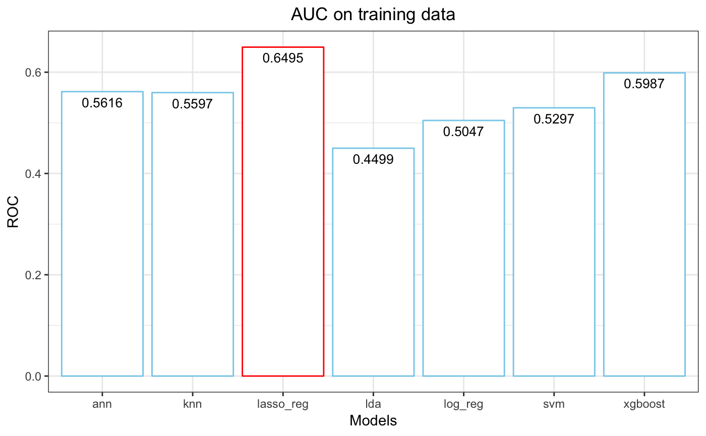

introduction_to_bestclassifier.RmdWhen creating binary classification models, you must:
+ identify your desired machine learning models
+ tune the parameters for each model
+ train each model on your training data
+ test the models on your testing data
+ compare the results to find the best modelbestclassifier facilitates this complex, arduous process by allowing you to complete all of those tasks in one function
+ This function supports eight elite machine learning binary classification models, including:
- logistic regression
- lasso regression
- random forest
- extreme gradient boosting
- support vector machine
- artificial neural network
- latent dirichlet allocation
- k nearest neighborsIn order to explore the best.classifier function, we will use the CCD dataset. This dataset contains default status and payment information for all credit card customers transacting with a Taiwanese bank in 2005.
CCD <- bestclassifier::CCD
str(CCD)
#> 'data.frame': 29728 obs. of 24 variables:
#> $ default.payment.next.month: Factor w/ 2 levels "Nondefault","Default": 2 2 1 1 1 1 1 1 1 1 ...
#> $ LIMIT : num 20000 120000 90000 50000 50000 50000 100000 140000 20000 200000 ...
#> $ SEX : Factor w/ 2 levels "M","F": 2 2 2 2 1 1 2 2 1 2 ...
#> $ EDUCATION : Factor w/ 4 levels "Other","Graduate_School",..: 3 3 3 3 3 2 3 4 4 4 ...
#> $ MARRIAGE : Factor w/ 4 levels "Other","Married",..: 2 3 3 2 2 3 3 2 3 3 ...
#> $ AGE : num 24 26 34 37 57 37 23 28 35 34 ...
#> $ REPAID.SEPT : Factor w/ 6 levels "1 Month Delay",..: 2 5 6 6 5 6 6 6 4 6 ...
#> $ REPAID.AUG : Factor w/ 5 levels "1-2 Month Delay",..: 1 1 5 5 5 5 4 5 3 5 ...
#> $ REPAID.JULY : Factor w/ 5 levels "1-2 Month Delay",..: 4 5 5 5 4 5 4 1 3 1 ...
#> $ REPAID.JUNE : Factor w/ 5 levels "1-2 Month Delay",..: 4 5 5 5 5 5 5 5 3 5 ...
#> $ REPAID.MAY : Factor w/ 5 levels "1-2 Month Delay",..: 3 5 5 5 5 5 5 5 4 5 ...
#> $ REPAID.APR : Factor w/ 5 levels "1-2 Month Delay",..: 3 1 5 5 5 5 4 5 4 4 ...
#> $ BILL_SEPT : num 3913 2682 29239 46990 8617 ...
#> $ BILL_AUG : num 3102 1725 14027 48233 5670 ...
#> $ BILL_JULY : num 689 2682 13559 49291 35835 ...
#> $ BILL_JUNE : num 0 3272 14331 28314 20940 ...
#> $ BILL_MAY : num 0 3455 14948 28959 19146 ...
#> $ BILL_APR : num 0 3261 15549 29547 19131 ...
#> $ PAYMENT_SEPT : num 0 0 1518 2000 2000 ...
#> $ PAYMENT_AUG : num 689 1000 1500 2019 36681 ...
#> $ PAYMENT_JULY : num 0 1000 1000 1200 10000 657 0 432 0 50 ...
#> $ PAYMENT_JUNE : num 0 1000 1000 1100 9000 ...
#> $ PAYMENT_MAY : num 0 0 1000 1069 689 ...
#> $ PAYMENT_APR : num 0 2000 5000 1000 679 ...In the example below, I am seeking the machine learning model that produces the highest AUC when classifying credit card default. These models will be predicting the “Default” category in the Class variable by using all of the predictors in the dataset. Because the CCD data contains nearly 30,000 observations, I am training the model on 1% of the training dataset for fast results.
library(bestclassifier)
bestclassifier(data = CCD, form = default.payment.next.month ~ ., p = 0.7, method =
"repeatedcv", number = 5, repeats = 1, tuneLength = 5,
positive ="Default", model = c("log_reg", "lasso", "lda",
"svm", "lda", "knn", "ann",
"xgboost"),
set_seed = 1234, subset_train = .01, desired_metric = "ROC")
#> Your best binary classification model is lasso_reg yielding an AUC of 0.6495
#> 
#> Confusion Matrix and Statistics
#>
#> Reference
#> Prediction Nondefault Default
#> Nondefault 6912 1916
#> Default 29 61
#>
#> Accuracy : 0.7819
#> 95% CI : (0.7732, 0.7904)
#> No Information Rate : 0.7783
#> P-Value [Acc > NIR] : 0.2112
#>
#> Kappa : 0.0405
#> Mcnemar's Test P-Value : <2e-16
#>
#> Sensitivity : 0.03085
#> Specificity : 0.99582
#> Pos Pred Value : 0.67778
#> Neg Pred Value : 0.78296
#> Prevalence : 0.22169
#> Detection Rate : 0.00684
#> Detection Prevalence : 0.01009
#> Balanced Accuracy : 0.51334
#>
#> 'Positive' Class : Default
#> According to the bar graph, the lasso regression model performed the best on the training data, depicting an AUC of .6495.
Random Forest results on testing data:
+ Accuracy: 78.2%
+ Sensitivity: 3.1%
+ Specificity: 99.6%
+ Positive Predictive Value: 67.8%
+ Negative Predictive Value: 78.3%